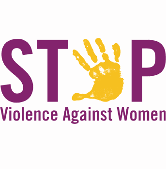

|
|

هزار توی خشونت؛ از خشونتهای پراکنده تا خشونتهای سازمان یافته علیه کودکان و زنان / به مناسبت 25 نوامبر
ناهید میرحاج
دو شنبه6 آذر 1391
تغییر برای برابری: هنوز چند هفته ای از ترور ملاله دخترنوجوان پاکستانی نگذشته بود که خبری تکان دهنده از قتل یک دختر نوجوان پاکستانی از سوی پدر و مادرش آن هم با اسید وجدانهای بیدار را در بهت فرو برد. تقریباً هر روزه چنین خبرهایی در صدر اخبار جهانی یا منطقه ای به گوش ما می رسد و انگار کم کم به این وضعیت عادت میکنیم. در یک نگاه عمیق، ریشههای این خشونتها از یک طرف، جهل و تعصبی است که دنیای امروز را درگیر خود کرده است و از سوی دیگر در شکل سازمان یافته آن برآمده از منافع سازمانهای مافیایی و قاچاق است که به طور سیستماتیک به ترویج خشونت می پردازند. خشونت پراکنده و خشونت سازمان یافته علیه زنان و کودکان چیست و چه نقشی در زندگی ما دارند؟
هزار توی خشونت، همان دیو هزار دستی است که جهان و اطراف ما را گرفته است. لایه به لایه و تو به تو، چنان که در نهایت به هزارتویی از خشونت تبدیل شده است. هر توی و لایه ایی را که برداریم با لایه ایی دیگر روبرو می شویم. تقریباً در بیشتر نقاط جهان و بخصوص منطقه جغرافیایی که ما زندگی می کنیم، اکثریت مردم این مناطق از کودکی با نوعی خشونت آشنا می شوند که میتوان به آن خشونت پراکنده از نوع خانوادگی یا قومی و قبیله ای گفت. این خشونتها بیشتر ناشی از نظام مردسالار است که به طور تاریخی جزیی از فرهنگ این جوامع درآمده است. اجبار به تبعیت بی چون و چرا از دستورات پدر یا بزرگان قوم و قبیله و اجرای این دستورات یکی از نکتههایی است که خشونتهای پراکنده و خانوادگی را نشان میدهد. بسیاری از کودکان دیروز که امروز در سن بزرگسالی هستند بیاد می آوردند که به سبب سرپیچی از دستورات پدر چطور مبتلا به انواع تنبیه بدنی مانند شلاق خوردن با کمربند یا ضربه های سخت مشت، لگد و سیلی بوده اند که شاید هم به سبب همین تنبیهات برای همیشه دچار ضایعههای جسمی مانند پاره شدن پرده گوش یا نابینایی شدهاند. وقتی که کودکان در سن قبل از بلوغ به سر می برند ماهیت این خشونتها به جز در موارد مشخص چندان تفکیک شده نیست، اما با بلوغ جسمی و جنسی این کودکان نوع خشونتها نیز به شدت و سختی تفکیک می شود. در جوامع مردسالار سنتی حفظ سنتها یکی از ضروریات برای بقای آن جامعه است. در این جوامع دختران در دوره پیش بلوغ گاهاً از خشونتهای وحشتناکی مانند ختنه دچار صدمههای سخت می شوند. این خشونتها که در نوع خود ماهیت پیچیده این جوامع را نشان می دهد، به نوعی ارتکاب خشونت در امروز برای رویدادهای فردا است. دختران در این جوامع ختنه میشوند تا از لذت جنسی در آینده محروم شوند. حق لذت جنسی برای مرد پدیده ای است که چنین خشونتی را در سن کم روا میدارد. چه بسیار دخترکانی که در وقت این عمل فجیع به سبب عفونتهای ناشی از عمل آن هم با وسایل ابتدایی مانند تیغ سلمانی جان باختهاند و هیچگاه به بزرگسالی نرسیده اند که مردان خانواده نگران از لذت جنسی آنها باشند!
اگر به گذشته برگردیم و خشونتهای پراکنده را در جامعههایی مانند جامعه خودمان بخصوص خشونتهایی که علیه زنان و کودکان می شود،بررسی کنیم سر به فلک می زند و شاید گاهی نشود همه آنها را شناخت چون بخشهایی از خشونتهای پنهان هنوز در بعضی از جوامع مانند ایران به عنوان خشونت رسمیت ندارند. با توجه به اینکه خشونتهای پراکنده انواع مختلف دارند و صدها لایه از هزارتوی خشونت را میسازند می توان در مورد آنها بسیار گفت و نوشت. اما در این مقاله سعیام براین نیست که دوباره تکرار مکرر کنم و درباره این نوع خشونتها بنویسم. این بار میخواهم از اشکال و لایههایی از خشونت بگویم که به طور جدی هستی ما را به عنوان ساکنین یک کره یا زمین تهدید میکند. اما قبل از هر موضوعی باید بدانیم خشونت سازمان یافته به چه نوعی از خشونت گفته میشود. خشونت سازمان یافته از ترکیب خشونت و صفت سازمان یافتگی برخوردار است.
آن طور که سازمان بهداشت جهانی در تعریف خشونت می گوید " هر نوع زور فیزیکی یا قدرتی که شخص،گروه یا جامعه ای را تهدید میکند یا در مورد آنها بکار برده میشود، که حاصلش به احتمال زیاد جراحت، مرگ، صدمات روانی، محرومیت و نقصان است. "
در تعریف خشونت سازمان یافته اما آمده است که این نوع خشونت خصلت چتری دارد و گروهی بزرگ از خشونتها را زیر آن میتوان تعریف کرد. منازعههای دولتی، منازعههای غیردولتی، منازعههای یک طرفه که در حقیقت همان جنگها باشند،در راس این چتر قرار دارند. در حقیقت تا مدتهای مدید هم شکل اصلی خشونت سازمان یافته همین نوع از خشونت یعنی جنگهای کلاسیک و تخاصمات سرزمینی بوده است. اما پس از جنگ جهانی دوم و بخصوص در چند دهه اخیر خشونتهای سازمان یافته چنان وسعت گرفته است که به تعریفهای مجدد نیاز دارد. بزرگترین شاخصه خشونت سازمان یافته که در تعریف آن مستتر است، اعمال خشونت به شکل سازمان یافته و مستمر گروهی از زورمندان یا صاحبان قدرت علیه معترضان به بیعدالتی ها و تبعیضها یا بخشهای کم توان تر جامعه مانند کودکان و زنان است. در حقیقت خشونت سازمان یافته در یک بعد کسانی را نشانه میگیرد که تهدیدی برای آنها به حساب میآیند و در بعد دیگر کسانی را هدف قرار می دهد که میتوانند به اشکال مختلف از آنها بهره برداری جنسی و جسمی کنند. نگاهی به مافیاهای تجارت سکس که در کمربندی از بالاترین نقطه روسیه سابق تا جمهوری های تازه تاسیس مانند اوکراین تا شیخ نشین های عربی از یک طرف و از طرف دیگر جنوب شرقی آسیا در کشورهایی مانند تایلند تا اروپا را شامل میشود، نشان می دهد که شبکههای سازمان یافتهایی از نیروهای پلیس محلی و سیاستمداران و تاجران فاسد و دلالان بیرحم وجود دارند که دختران نوجوان را به طرزی پیش خرید میکنند، مدتها آنها را در مکانهای مخصوص نگهداری و درنهایت وارد شبکه ای میکنند که سودهای کلان را نصیبت این افراد میکند. این نوع از خشونت چند وجهی تا پنجاه سال گذشته در جهان وجود نداشت و اگر تجارت سکسی هم وجود داشت در ابعاد منطقه ای و محلی درشبکه هایی کوچک بود. گفته شده است هرساله بیش از 800 صد میلیارد دلار درآمد ناشی از تجارت سکس است. جالب اینجاست که در پشت پرده این تجارت پنهان گروهی از کسانی حضور دارند که در ظاهر کارشان پاک است و به شبکههای تجارت سکس متصل نیستند،اما به گفته ای : این صنعت که در یک بازار جهانی شده گسترش یافته و هم زمان سطح محلی و سطح منطقه ای را یکپارچه می سازد، به نیروی اقتصادی پرهیزناپذیر تبدیل شده است. روسپیگری و صنعتهای جنسی مرتبط با آن – میکده ها، باشگاههای رقص، روسپی خانهها، سالنهای ماساژ، مزونهای تولید هرزه نگاری و غیره - روی اقتصاد زیرزمینی پرحجم تکیه میکنند که توسط پااندازیهای مرتبط باجنایت سازمان یافته کنترل میشود و به نیروهای نظم فاسد سود میرساند. زنجیرههای هتل داران بین المللی، شرکت های هوایی و صنعت توریستی وسیعاً از صنعت تجارت جنسی سود می برند و به دولتها نیز از این بابت سود میرسانند.
با این همه تجارتی مانند سکس تنها یکی از وجه یا لایه های خشونت گسترده ای است که علیه زنان و کودکان اعمال میشود. در این مورد بخصوص می توان از تجارت مواد مخدر گفت که به وسعت کره زمین برقرار است و در این تجارت زنان و کودکان هم به عنوان قربانیان مواد مخدر و هم به عنوان قسمتی از شبکه توزیع خرد در سطح شهرها و مناطق دیگر قربانی انواع خشونت سازمان یافته و بیرحمانه قرار دارند.

یکی دیگر از اشکال خشونت سازمان یافته که در قرن بیستم دامنگیر بشریت شد، خشونت بی حساب و کتاب و وسیع نسبت به فعالین اجتماعی و فرهنگی ، اقلیت های قومی ونژادی و در یک کلام حذف بخشی از بشریت از صحنه گیتی بود. انقلابهای اجتماعی که در این قرن در بخشهایی از اروپا و آسیا مانند روسیه ،چین و ژاپن حادث شد، و شکلگیری نظامهای فاشیستی در اروپا همگی خشونت گسترده ای را سبب شد که بیش از همه دورهی بین جنگ جهانی اول و دوم را دربرگرفت و بعد از آن نیز به اشکال گوناگون در اروپا و بخشهایی از آسیا و افریقا ادامه یافت. در این خشونتها دهها میلیون انسان جان خود را از دست دادند یا برای همیشه از صدمات ناشی از این خشونتها رنج کشیدند. در این میان اما داستانهایی که از خشونت روا شده به کودکان و زنان اعمال شد همچنان از جنبه موضوعی و خبری تازگی خود را حفظ کرده است. جنایات ارتش آلمان در خاک شوروی سابق نسبت به زنان و کودکان و سپس انتقام سربازان سرخ در شهرهای آلمان نسبت به زنان و کودکان چیزی است که هنوز در باره آن نوشته و گفته می شود. در حقیقت تجاوز به قصد تمتع جنسی و شکست روحی دشمن موضوعی است که از راه کودکان و زنان حاصل می شود. این پدیده حتی اکنون هم در کشورهایی که محل نزاعها و خشونتهای سازمان یافته اند،تکرار می شود. داستان تجاوزاتی که در دوره ناآرامی های لیبی در حق زنان شد و اکنون نیز در سوریه به اشکال مختلف شاهد آن هستیم نشان دهنده تنها یک وجه از خشونت سازمان یافته علیه زنان و کودکان است. در حالی که این خشونتها زیر آتش توپخانه و بمبارانها و نبردهای شهری اتفاق می افتد و زنان باید از یک طرف فکر جان خود و فرزندانشان باشند و از طرف دیگر از ظاهر شدن در برابر نیروهای داخلی که در دشمنی با آنها هستند بپرهیزند. در همین زمینه البته می توان از خشونتهای سازمان یافته ای که سالهاست اسرائیلی ها علیه مردم و بخصوص زنان و کودکان غزه به کار می برند یاد کرد. محاصرههای دریایی و زمینی امروزه به شکلی از اعمال خشونت علیه مردم به طور کلی و زنان و کودکان بخصوص اعمال می شود. صدها گزارش پزشکی از بیمارستان های غزه وجود دارد که نشان می دهد که کودکان و زنان قربانیان اصلی کمبودهای دارویی و درمانی ناشی از محاصره ارتش اسرائیل هستند.
شکل دیگری از خشونت سازمان یافته ناشی از منازعههای میان بنیادگرایان و نیروهای دیگر است که امروزه جان زنان و کودکان را تهدید می کند. مرور خبرهایی که از پاکستان و افغانستان می رسد نشان دهنده ترویج و گسترش این نوع از خشونت علیه زنان و کودکان است. سال گذشته چندین مورد از اخبار مسمومیت یا اسید پاشی به دختران دانش آموز افغانی توسط طالبان و شبکههای دیگر از بنیادگرایان توجه جامعه جهانی را به آسیب پذیری این گروه از مردم جلب کرد. این نوع از خشونت در آن سوی مرز افغانستان یعنی پاکستان نیز به شدت درجریان است. به تازگی اخباری از ربودن دختران مسیحی و هندو در پاکستان توسط طالبان و بنیادگرایان پاکستانی و خرید و فروش آنها به قدرتمندان محلی منتشر می شود. این شکل از خشونت نیز آسیب پذیری زنان و کودکان را در منازعه های قومی و نژادی نشان می دهد و در نقاط مختلف جهان از آسیا تا افریقا به شدت رواج دارد. نمونه مخالف این کار را اخیراً در برمه یا میانمار شاهد بودیم که اقلیت مسلمانان به شدت از سوی بوداییان آسیب دیدند و طبیعتاً در این میان زنان و کودکان قربانیان اول خشونتها هستند.
اینها انواعی از خشونت سازمان یافته آشکار نسبت به زنان و کودکان بود که هر روزه در سطح جهان اتفاق می افتد و وجدان بشری را تیرهتر می سازد. انواع دیگری از خشونتهای سازمان یافته نسبت به زنان و کودکان وجود دارد که نه رسمیت یافته است و نه سخن چندانی از آن گفته می شود. در بخشهایی از جهان امروز زنان و کودکان به عنوان کارگران ارزان قیمت و بی صدا به کار در رشته هایی مانند نساجی مشغول به کار هستند که نه تنها از جنبه اقتصادی مورد خشونت سازمان یافته قرار می گیرند که همواره آزار و اذیت جنسی یکی از عواملی است که سبب رنج آنها میشود. گفته میشود که 90 درصد کارگران صنایع نساجی و دوخت و دوز را زنان و نوجوانان دختر تشکیل می دهند. برای مثال در مورد بنگلادش که یکی از قطبهای صنعت نساجی برای کمپانیهای صاحب نام غربی است وضعیت زنان چنین گزارش شده است: بخش نساجی بخاطر اهمیت درجه اولی که در اقتصاد بنگلادش دارد در حدود چهل درصد نیروی کار کشور را جذب رشته نساجی کرده است. هشتاد و پنج درصد از نیروی کار سه و نیم میلیونی بخش نساجی را زنان تشکیل می دهند.بخش اعظم این زنان بسیار جوان بوده و سن شان از چهارده سال به بالاست.( کودکان کم سن هم اغلب به عنوان کارگر کمکی با دستمزدهای بسیار پائین و به صورت غیررسمی به کار گرفته می شوند). زنان به طور متوسط تنها بیست سال در این رشته کار می کنند زیرا پس از این مدت کاهش نورچشم و سایر ضایعات بدنی، که اغلب به سوءتغذیه شدید مربوط است، زنان را از پای درآورده و از آن پس توسط کارفرمایان به عنوان کارگران فاقد کارآئی لازم از کار اخراج می شوند. در بخش دیگری از همین منبع در مورد حضور زنان کارگر در بخش نساجی در جهان و سواستفاده های جنسی از آنها گفته شده است: 90درصد از 30 ميليون کارگران نساجی را زنان تشکيل ميدهند. اکثر کارگران کشورهای آسيايی زنان جوان ميباشند که بعنوان کارگران مهاجر به هند، چين يا بنگلادش برای کار مهاجرت می کنند تا بتوانند زندگی بخور و نمير خانواده خود را تامين کنند. اين زنان هفته ای هفت روز بر روی خط توليد زنجيرهای کار کرده واغلب وادار به اضافه کاري، بدون دريافت دستمزد، می شوند. اين زنان کارگر به عنوان زن دائما تبعيض جنسی را در محيط کار خود احساس میکنند، در برابر کار برابر با مردان دستمزدی کمتر از آن ها دريافت می کنند و بطور دائم از طريق بالادستان مرد خود تحت آزار جنسی و مجازات قرار می گيرند.
اما نوعی دیگر از خشونت سازمان یافته نسبت به زنان و حتی کودکان آنان وجود دارد که بیشتر به زنان فعال در عرصه اجتماعی و فرهنگی برمی گردد. جهان بعد از جنگ جهانی دوم همواره با جنبشهای اجتماعی و فرهنگی در تلاطم بوده است. این تلاطم گاهی از امریکای لاتین و گاهی در آسیا و گاهی در افریقا یا مناطق دیگر زمین خود را نشان میدهد. اتفاقاتی که در دهههای گذشته در امریکای لاتین در اشکال مختلف بروز کرد و ناشی از فعالیت های سیاسی و اجتماعی و فرهنگی بود، و زنان نیز در آن نقش برجسته ای داشتند سبب شد که در همین حال از دید نیروهای امنیتی و یا حاکمان در قدرت طعمههای مناسبی برای اعمال خشونت سازمان یافته در حبس یا شکنجه گاهها به حساب روند. در این زمینه روایتهای متعددی از رفتارهای به غایت وحشیانه نسبت به زنان و کودکان آنها منتشر شده است که نشان می دهد خشونت سازمان یافته نسبت به این گروههای جنسی و سنی به شدت برای رسیدن به هدفهای متعدد به کار میرفته است. همچنین در مناطق دیگر جهان و از جمله منطقه و وطن خودمان نیز خشونتهای سازمان یافته نسبت به زنانی که درگیر فعالیت های اجتماعی وفرهنگی بوده اند در جریان است. گزارش های هرروزه از اعمال خشونت سازمان یافته به این فعالان که بعضی از آنها اکنون در بند هستند نشان می دهد که هزار توی خشونت سازمان یافته در سرتاسر جهان امروز حیات مادی و معنوی این گروه های اجتماعی و جنسی را تهدید می کند. حضور آنان که برای آرمانهای خود در بند هستند به ما یادآوری می کند به خاطر آرمانهای مشترک انسانی و مبارزه با انواع خشونت امیدوار باشیم. امیدوار به روزی که ناظر جهانی عاری از خشونت پراکنده و سازمان یافته باشیم.